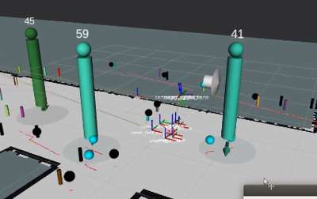
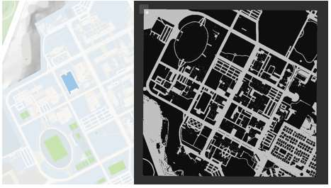

Map-light patrol
Naver map conversion provides a global map for waypoint planning, reducing the setup burden of repeated SLAM mapping.
Hanyang University ERICA, Department of Robotics
ICROS 2023, June 21-23, Samcheok Sol Beach
Drones and mobile robots are useful for unmanned patrol and military scouting, but each platform has a different weakness: ground robots struggle in rugged terrain, while drones are limited by onboard battery capacity. Carrier combines both systems so a mobile robot with a larger battery can carry and charge the drone, move it near the target region, and let the drone handle terrain that blocks the ground platform.
Naver map conversion provides a global map for waypoint planning, reducing the setup burden of repeated SLAM mapping.
The mobile robot acts as a moving station with a docking deck and wireless charging from its larger battery.
Robot and drone camera feeds can be sent to the control system, while Jetson Orin can run AI models such as YOLO.
The ground robot handles efficient transport and the drone covers areas that are physically difficult for wheels.
The design modules below are illustrated by the figures that follow: obstacle detection supports perception and planning, map conversion supports global planning, the hardware figure shows charging and docking, and the architecture diagrams show the localization and navigation flow.
Wheel odometry, IMU, and RTK GNSS are fused with an Extended Kalman Filter to estimate robot pose on the map.
Three RealSense cameras and front/rear LiDAR support terrain and obstacle understanding; point-cloud height changes are reflected into the costmap.
Depth-camera YOLO detections and LiDAR/point-cloud data support obstacle insertion and relative-motion-aware path planning.
Converted Naver map data is used as a global map for waypoint-based route planning, reducing wasted resources.
A docking station on the mobile robot lets the drone land and charge wirelessly from the robot battery.
ArUco-marker station detection estimates the relative position between drone and station for corrective landing control.


The platform uses a commodity mobile robot base and drone, three RealSense cameras, two LiDAR sensors, a docking station, and an automatic wireless charging system for longer autonomous patrol operation.
| Description | URDF, xacro, meshes, and RViz model configuration. |
|---|---|
| Gazebo | Simulation launch files, worlds, robot model integration, and environment assets. |
| SLAM and Map Export | GMapping launch/config files, station maps, occupancy map saving, map cropping tools, and map conversion support. |
| Navigation | Move base, AMCL, EKF localization, indoor/outdoor parameters, RTK/GNSS-oriented launch files, and RViz navigation views. |
| Perception and Sensors | LiDAR, IMU, three RealSense camera launch files, floor detection, sensor fusion, and environment perception. |
| Interfaces | Battery aggregation, ArUco station detection support, web interface nodes, custom messages, and services. |
@inproceedings{kim2023carrier,
title = {Separable Integrated Drone-Mobile Robot System for Unmanned Patrol},
author = {Kim, Jeonghan and Park, Jongchan and Lee, Hayeon and Park, Suhwan and Nam, Yunjea and Kwon, Gihyeon and Jung, Woohyeon and Lee, Youngmoon},
booktitle = {ICROS 2023},
year = {2023},
url = {https://github.com/7drone/carrier_ros},
}